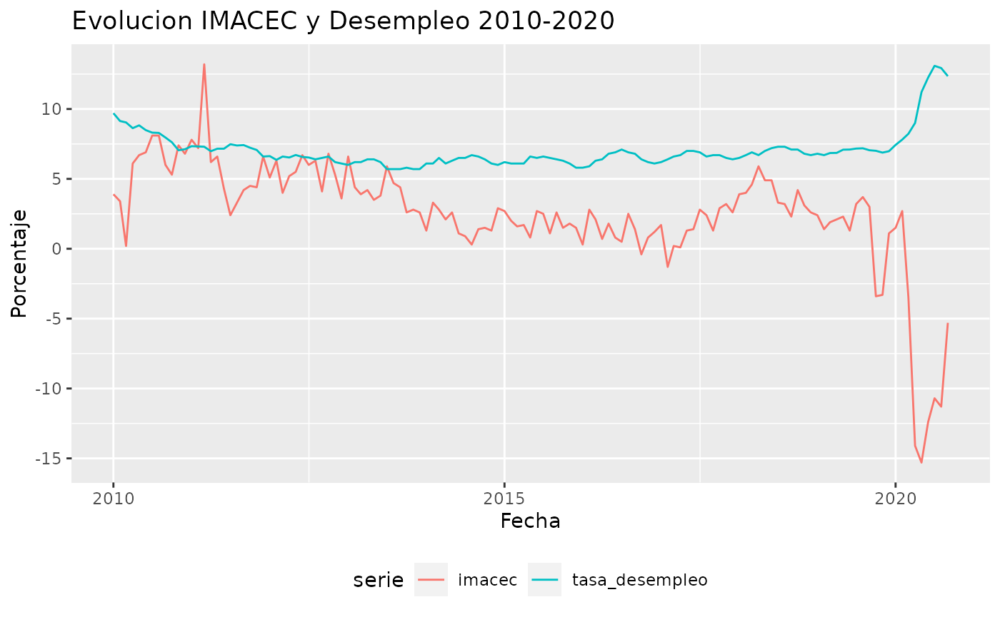

Esta vinieta pretende explicar como usar mindicador en una situacion real. Partire intentando ponerme en los zapatos de una periodista que esta escribiendo un reportaje sobre la evolucion de la economia chilena en el periodo 2010-2020. Me centrate en el IMACEC (Indice de Medicion de la Actividad Economica) y el desempleo.
Es posible obtener ambos indicadores de manera directa:
library(mindicador) library(ggplot2) library(readxl) # veo los codigos de ambos indicadores mindicador_indicadores #> nombre codigo unidad desde #> 1: Unidad de fomento (UF) uf Pesos 1977 #> 2: Indice de valor promedio (IVP) ivp Pesos 1990 #> 3: Dolar observado dolar Pesos 1984 #> 4: Dolar acuerdo dolar_intercambio Pesos 1988 #> 5: Euro euro Pesos 1999 #> 6: Indice de Precios al Consumidor (IPC) ipc Porcentaje 1928 #> 7: Unidad Tributaria Mensual (UTM) utm Pesos 1990 #> 8: Imacec imacec Porcentaje 1997 #> 9: Tasa Politica Monetaria (TPM) tpm Porcentaje 2001 #> 10: Libra de Cobre libra_cobre Dólar 2012 #> 11: Tasa de desempleo tasa_desempleo Porcentaje 2009 #> 12: Bitcoin bitcoin Dólar 2009 # obtengo los datos datos <- mindicador_importar_datos(c("imacec", "tasa_desempleo"), 2010:2020) # veo los datos datos #> serie fecha valor #> 241 imacec 2020-06-01 -12.40 #> 247 tasa_desempleo 2020-06-01 12.25 #> 242 imacec 2020-05-01 -15.30 #> 248 tasa_desempleo 2020-05-01 11.21 #> 243 imacec 2020-04-01 -14.10 #> 249 tasa_desempleo 2020-04-01 9.00 #> 244 imacec 2020-03-01 -3.50 #> 250 tasa_desempleo 2020-03-01 8.23 #> 245 imacec 2020-02-01 2.70 #> 251 tasa_desempleo 2020-02-01 7.81 #> 246 imacec 2020-01-01 1.50 #> 252 tasa_desempleo 2020-01-01 7.43 #> 217 imacec 2019-12-01 1.10 #> 229 tasa_desempleo 2019-12-01 6.98 #> 218 imacec 2019-11-01 -3.30 #> 230 tasa_desempleo 2019-11-01 6.88 #> 219 imacec 2019-10-01 -3.40 #> 231 tasa_desempleo 2019-10-01 7.01 #> 220 imacec 2019-09-01 3.00 #> 232 tasa_desempleo 2019-09-01 7.05 #> 221 imacec 2019-08-01 3.70 #> 233 tasa_desempleo 2019-08-01 7.19 #> 222 imacec 2019-07-01 3.20 #> 234 tasa_desempleo 2019-07-01 7.17 #> 223 imacec 2019-06-01 1.30 #> 235 tasa_desempleo 2019-06-01 7.10 #> 224 imacec 2019-05-01 2.30 #> 236 tasa_desempleo 2019-05-01 7.09 #> 225 imacec 2019-04-01 2.10 #> 237 tasa_desempleo 2019-04-01 6.86 #> 226 imacec 2019-03-01 1.90 #> 238 tasa_desempleo 2019-03-01 6.85 #> 227 imacec 2019-02-01 1.40 #> 239 tasa_desempleo 2019-02-01 6.70 #> 228 imacec 2019-01-01 2.40 #> 240 tasa_desempleo 2019-01-01 6.80 #> 193 imacec 2018-12-01 2.60 #> 205 tasa_desempleo 2018-12-01 6.70 #> 194 imacec 2018-11-01 3.10 #> 206 tasa_desempleo 2018-11-01 6.80 #> 195 imacec 2018-10-01 4.20 #> 207 tasa_desempleo 2018-10-01 7.10 #> 196 imacec 2018-09-01 2.30 #> 208 tasa_desempleo 2018-09-01 7.10 #> 197 imacec 2018-08-01 3.20 #> 209 tasa_desempleo 2018-08-01 7.30 #> 198 imacec 2018-07-01 3.30 #> 210 tasa_desempleo 2018-07-01 7.30 #> 199 imacec 2018-06-01 4.90 #> 211 tasa_desempleo 2018-06-01 7.20 #> 200 imacec 2018-05-01 4.90 #> 212 tasa_desempleo 2018-05-01 7.00 #> 201 imacec 2018-04-01 5.90 #> 213 tasa_desempleo 2018-04-01 6.70 #> 202 imacec 2018-03-01 4.60 #> 214 tasa_desempleo 2018-03-01 6.90 #> 203 imacec 2018-02-01 4.00 #> 215 tasa_desempleo 2018-02-01 6.70 #> 204 imacec 2018-01-01 3.90 #> 216 tasa_desempleo 2018-01-01 6.50 #> 169 imacec 2017-12-01 2.60 #> 181 tasa_desempleo 2017-12-01 6.40 #> 170 imacec 2017-11-01 3.20 #> 182 tasa_desempleo 2017-11-01 6.50 #> 171 imacec 2017-10-01 2.90 #> 183 tasa_desempleo 2017-10-01 6.70 #> 172 imacec 2017-09-01 1.30 #> 184 tasa_desempleo 2017-09-01 6.70 #> 173 imacec 2017-08-01 2.40 #> 185 tasa_desempleo 2017-08-01 6.60 #> 174 imacec 2017-07-01 2.80 #> 186 tasa_desempleo 2017-07-01 6.90 #> 175 imacec 2017-06-01 1.40 #> 187 tasa_desempleo 2017-06-01 7.00 #> 176 imacec 2017-05-01 1.30 #> 188 tasa_desempleo 2017-05-01 7.00 #> 177 imacec 2017-04-01 0.10 #> 189 tasa_desempleo 2017-04-01 6.70 #> 178 imacec 2017-03-01 0.20 #> 190 tasa_desempleo 2017-03-01 6.60 #> 179 imacec 2017-02-01 -1.30 #> 191 tasa_desempleo 2017-02-01 6.40 #> 180 imacec 2017-01-01 1.70 #> 192 tasa_desempleo 2017-01-01 6.20 #> 145 imacec 2016-12-01 1.20 #> 157 tasa_desempleo 2016-12-01 6.10 #> 146 imacec 2016-11-01 0.80 #> 158 tasa_desempleo 2016-11-01 6.20 #> 147 imacec 2016-10-01 -0.40 #> 159 tasa_desempleo 2016-10-01 6.40 #> 148 imacec 2016-09-01 1.40 #> 160 tasa_desempleo 2016-09-01 6.80 #> 149 imacec 2016-08-01 2.50 #> 161 tasa_desempleo 2016-08-01 6.90 #> 150 imacec 2016-07-01 0.50 #> 162 tasa_desempleo 2016-07-01 7.10 #> 151 imacec 2016-06-01 0.80 #> 163 tasa_desempleo 2016-06-01 6.90 #> 152 imacec 2016-05-01 1.80 #> 164 tasa_desempleo 2016-05-01 6.80 #> 153 imacec 2016-04-01 0.70 #> 165 tasa_desempleo 2016-04-01 6.40 #> 154 imacec 2016-03-01 2.10 #> 166 tasa_desempleo 2016-03-01 6.30 #> 155 imacec 2016-02-01 2.80 #> 167 tasa_desempleo 2016-02-01 5.90 #> 156 imacec 2016-01-01 0.30 #> 168 tasa_desempleo 2016-01-01 5.80 #> 121 imacec 2015-12-01 1.50 #> 133 tasa_desempleo 2015-12-01 5.80 #> 122 imacec 2015-11-01 1.80 #> 134 tasa_desempleo 2015-11-01 6.10 #> 123 imacec 2015-10-01 1.50 #> 135 tasa_desempleo 2015-10-01 6.30 #> 124 imacec 2015-09-01 2.60 #> 136 tasa_desempleo 2015-09-01 6.40 #> 125 imacec 2015-08-01 1.10 #> 137 tasa_desempleo 2015-08-01 6.50 #> 126 imacec 2015-07-01 2.50 #> 138 tasa_desempleo 2015-07-01 6.60 #> 127 imacec 2015-06-01 2.70 #> 139 tasa_desempleo 2015-06-01 6.50 #> 128 imacec 2015-05-01 0.80 #> 140 tasa_desempleo 2015-05-01 6.60 #> 129 imacec 2015-04-01 1.70 #> 141 tasa_desempleo 2015-04-01 6.10 #> 130 imacec 2015-03-01 1.60 #> 142 tasa_desempleo 2015-03-01 6.10 #> 131 imacec 2015-02-01 2.00 #> 143 tasa_desempleo 2015-02-01 6.10 #> 132 imacec 2015-01-01 2.70 #> 144 tasa_desempleo 2015-01-01 6.20 #> 97 imacec 2014-12-01 2.90 #> 109 tasa_desempleo 2014-12-01 6.00 #> 98 imacec 2014-11-01 1.30 #> 110 tasa_desempleo 2014-11-01 6.10 #> 99 imacec 2014-10-01 1.50 #> 111 tasa_desempleo 2014-10-01 6.40 #> 100 imacec 2014-09-01 1.40 #> 112 tasa_desempleo 2014-09-01 6.60 #> 101 imacec 2014-08-01 0.30 #> 113 tasa_desempleo 2014-08-01 6.70 #> 102 imacec 2014-07-01 0.90 #> 114 tasa_desempleo 2014-07-01 6.50 #> 103 imacec 2014-06-01 1.10 #> 115 tasa_desempleo 2014-06-01 6.50 #> 104 imacec 2014-05-01 2.60 #> 116 tasa_desempleo 2014-05-01 6.30 #> 105 imacec 2014-04-01 2.10 #> 117 tasa_desempleo 2014-04-01 6.10 #> 106 imacec 2014-03-01 2.80 #> 118 tasa_desempleo 2014-03-01 6.50 #> 107 imacec 2014-02-01 3.30 #> 119 tasa_desempleo 2014-02-01 6.10 #> 108 imacec 2014-01-01 1.30 #> 120 tasa_desempleo 2014-01-01 6.10 #> 73 imacec 2013-12-01 2.60 #> 85 tasa_desempleo 2013-12-01 5.70 #> 74 imacec 2013-11-01 2.80 #> 86 tasa_desempleo 2013-11-01 5.70 #> 75 imacec 2013-10-01 2.60 #> 87 tasa_desempleo 2013-10-01 5.80 #> 76 imacec 2013-09-01 4.40 #> 88 tasa_desempleo 2013-09-01 5.70 #> 77 imacec 2013-08-01 4.70 #> 89 tasa_desempleo 2013-08-01 5.70 #> 78 imacec 2013-07-01 5.90 #> 90 tasa_desempleo 2013-07-01 5.70 #> 79 imacec 2013-06-01 3.80 #> 91 tasa_desempleo 2013-06-01 6.20 #> 80 imacec 2013-05-01 3.50 #> 92 tasa_desempleo 2013-05-01 6.40 #> 81 imacec 2013-04-01 4.20 #> 93 tasa_desempleo 2013-04-01 6.40 #> 82 imacec 2013-03-01 3.90 #> 94 tasa_desempleo 2013-03-01 6.20 #> 83 imacec 2013-02-01 4.40 #> 95 tasa_desempleo 2013-02-01 6.20 #> 84 imacec 2013-01-01 6.60 #> 96 tasa_desempleo 2013-01-01 6.00 #> 49 imacec 2012-12-01 3.60 #> 61 tasa_desempleo 2012-12-01 6.10 #> 50 imacec 2012-11-01 5.30 #> 62 tasa_desempleo 2012-11-01 6.20 #> 51 imacec 2012-10-01 6.80 #> 63 tasa_desempleo 2012-10-01 6.60 #> 52 imacec 2012-09-01 4.10 #> 64 tasa_desempleo 2012-09-01 6.50 #> 53 imacec 2012-08-01 6.30 #> 65 tasa_desempleo 2012-08-01 6.40 #> 54 imacec 2012-07-01 6.00 #> 66 tasa_desempleo 2012-07-01 6.53 #> 55 imacec 2012-06-01 6.70 #> 67 tasa_desempleo 2012-06-01 6.57 #> 56 imacec 2012-05-01 5.50 #> 68 tasa_desempleo 2012-05-01 6.71 #> 57 imacec 2012-04-01 5.20 #> 69 tasa_desempleo 2012-04-01 6.53 #> 58 imacec 2012-03-01 4.00 #> 70 tasa_desempleo 2012-03-01 6.60 #> 59 imacec 2012-02-01 6.30 #> 71 tasa_desempleo 2012-02-01 6.36 #> 60 imacec 2012-01-01 5.10 #> 72 tasa_desempleo 2012-01-01 6.63 #> 25 imacec 2011-12-01 6.60 #> 37 tasa_desempleo 2011-12-01 6.60 #> 26 imacec 2011-11-01 4.40 #> 38 tasa_desempleo 2011-11-01 7.07 #> 27 imacec 2011-10-01 4.50 #> 39 tasa_desempleo 2011-10-01 7.23 #> 28 imacec 2011-09-01 4.20 #> 40 tasa_desempleo 2011-09-01 7.42 #> 29 imacec 2011-08-01 3.30 #> 41 tasa_desempleo 2011-08-01 7.39 #> 30 imacec 2011-07-01 2.40 #> 42 tasa_desempleo 2011-07-01 7.48 #> 31 imacec 2011-06-01 4.30 #> 43 tasa_desempleo 2011-06-01 7.16 #> 32 imacec 2011-05-01 6.60 #> 44 tasa_desempleo 2011-05-01 7.16 #> 33 imacec 2011-04-01 6.20 #> 45 tasa_desempleo 2011-04-01 6.98 #> 34 imacec 2011-03-01 13.20 #> 46 tasa_desempleo 2011-03-01 7.30 #> 35 imacec 2011-02-01 7.20 #> 47 tasa_desempleo 2011-02-01 7.32 #> 36 imacec 2011-01-01 7.80 #> 48 tasa_desempleo 2011-01-01 7.34 #> 1 imacec 2010-12-01 6.80 #> 13 tasa_desempleo 2010-12-01 7.12 #> 2 imacec 2010-11-01 7.40 #> 14 tasa_desempleo 2010-11-01 7.05 #> 3 imacec 2010-10-01 5.30 #> 15 tasa_desempleo 2010-10-01 7.62 #> 4 imacec 2010-09-01 6.00 #> 16 tasa_desempleo 2010-09-01 7.96 #> 5 imacec 2010-08-01 8.10 #> 17 tasa_desempleo 2010-08-01 8.29 #> 6 imacec 2010-07-01 8.10 #> 18 tasa_desempleo 2010-07-01 8.31 #> 7 imacec 2010-06-01 6.90 #> 19 tasa_desempleo 2010-06-01 8.49 #> 8 imacec 2010-05-01 6.70 #> 20 tasa_desempleo 2010-05-01 8.83 #> 9 imacec 2010-04-01 6.10 #> 21 tasa_desempleo 2010-04-01 8.63 #> 10 imacec 2010-03-01 0.20 #> 22 tasa_desempleo 2010-03-01 9.04 #> 11 imacec 2010-02-01 3.40 #> 23 tasa_desempleo 2010-02-01 9.14 #> 12 imacec 2010-01-01 3.90 #> 24 tasa_desempleo 2010-01-01 9.70
Simplemente para explorar visualmente lo obtenido:
# las dos series estan en la misma escala (porcentaje) asi que los puedo dejar en un mismo grafico ggplot(data = datos, aes(x = fecha, y = valor, color = serie)) + geom_line() + theme(legend.position = "bottom") + labs(title = "Evolucion IMACEC y Desempleo 2010-2020", x = "Fecha", y = "Porcentaje")
